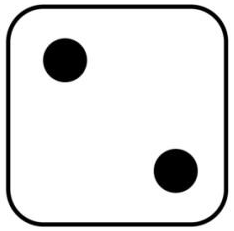
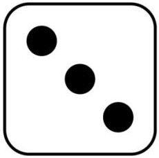
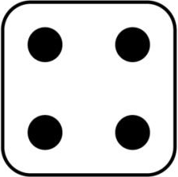
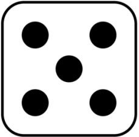
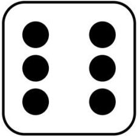

1. Practicar número random
Hacer un programa que genere un número random entre 1 y 6 y muestre el dado correspondiente en pantalla
Pista: Usando concatenación cambiar el src de la imagen asignando el nuevo valor de
la siguiente manera: "dado"+numeroRandom+".png"
Descargar dados:





